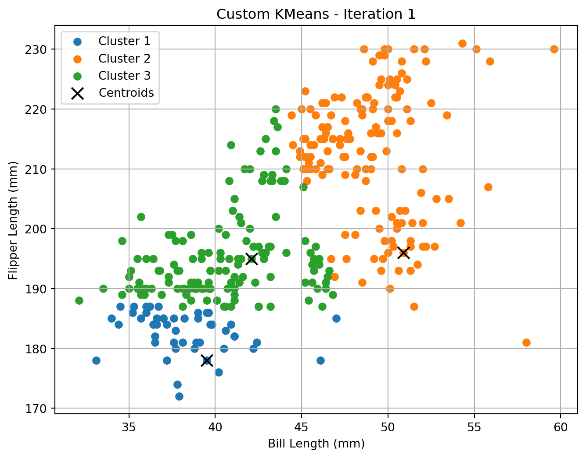
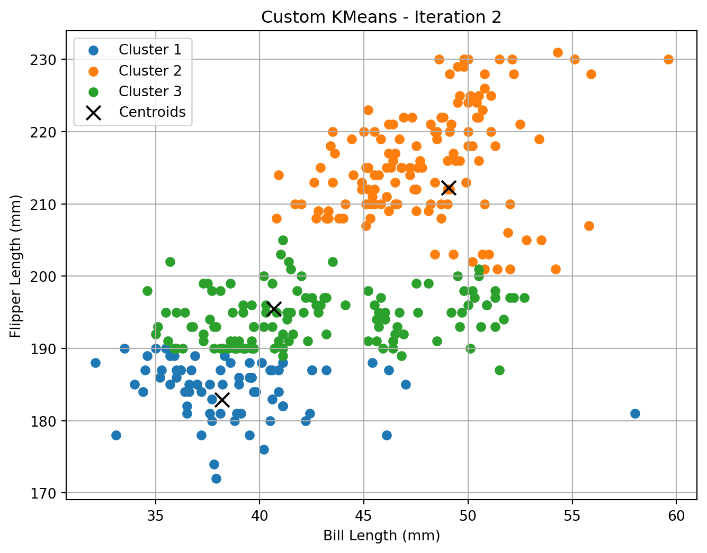
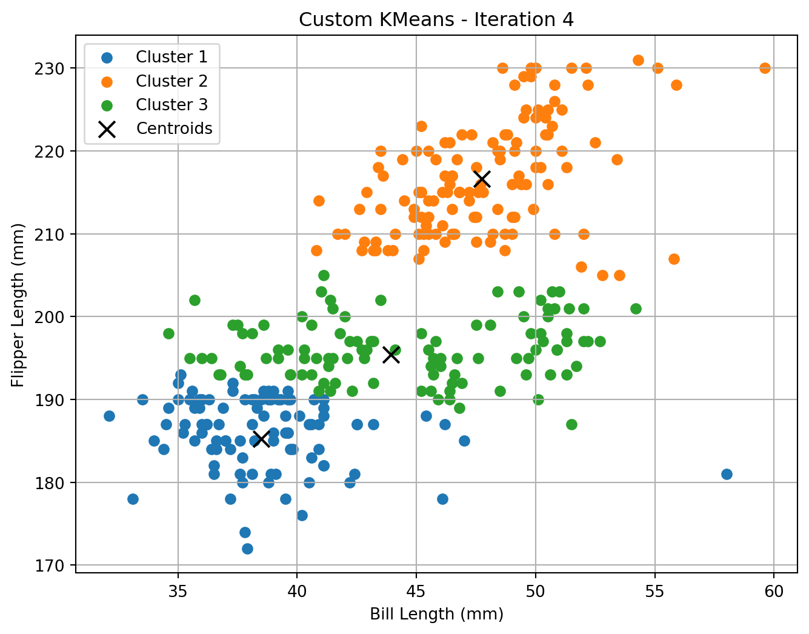
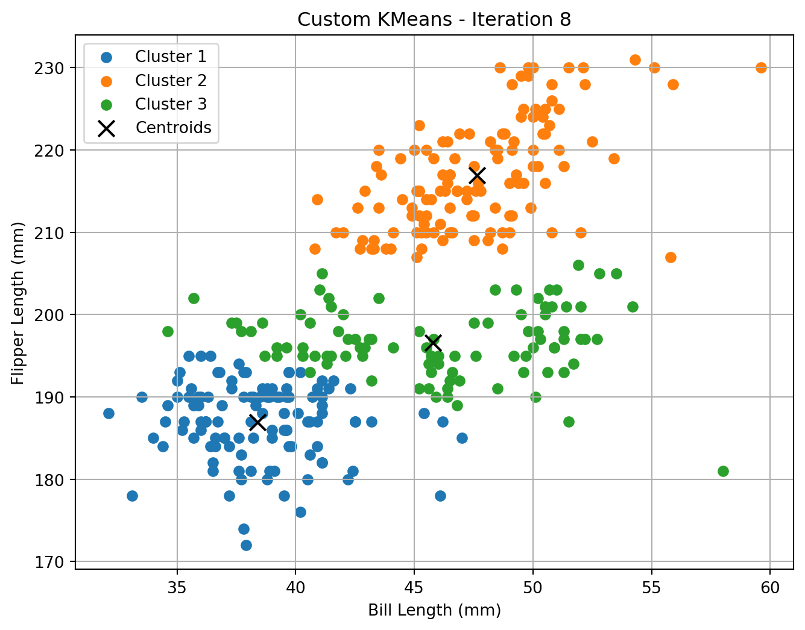
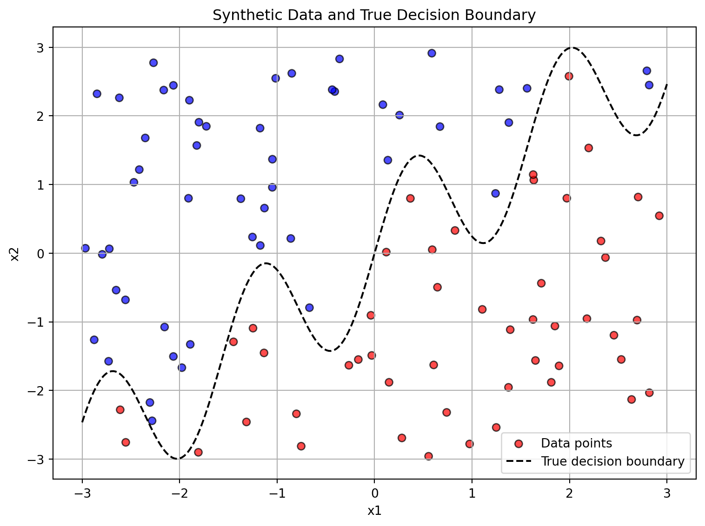
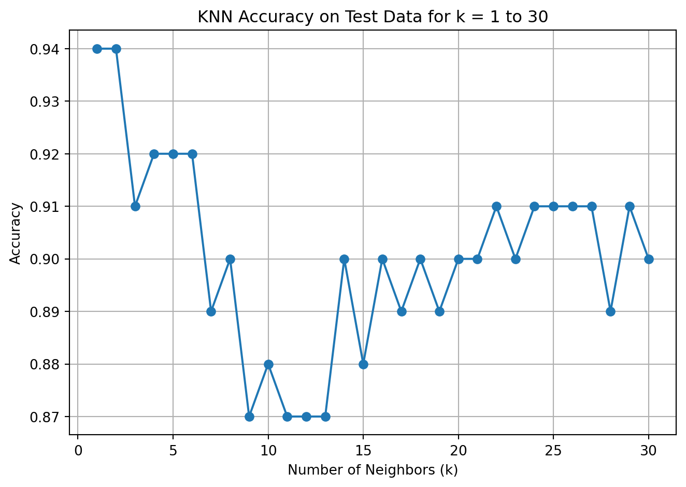

This analysis applies the K-Means clustering algorithm to the Palmer Penguins dataset, using two key morphological measurements: bill length and flipper length. The goal is to explore whether natural groupings of penguins can be uncovered without using species labels, and how well these groupings align with biological categories.
Unlike supervised learning, clustering is an unsupervised machine learning method, meaning it identifies structure in the data without relying on labeled outcomes. K-Means is one of the most common techniques for this purpose, partitioning observations into k clusters based on feature similarity.
In this project, we implement K-Means both from scratch and using scikit-learn, visualize the clustering process across iterations, compare our custom implementation to the built-in version, evaluate different values of k using WCSS and silhouette scores to identify the optimal number of clusters.
This exercise provides both technical practice in unsupervised learning and biological insight into how penguin species differ morphologically.
Palmer Penguins
The Palmer Penguins dataset provides biological measurements for three penguin species native to islands in the Palmer Archipelago, Antarctica: Adélie, Chinstrap, and Gentoo.
Each row in the dataset corresponds to a single penguin and includes variables such as:
species: species name (Adélie, Chinstrap, or Gentoo)
island: island where the penguin was observed
bill_length_mm: bill length (mm)
bill_depth_mm: bill depth (mm)
flipper_length_mm: flipper length (mm)
body_mass_g: body mass (g)
sex: biological sex (if known)
year: year of observation
For this analysis, we focus on two numerical features: Bill Length (bill_length_mm) , Flipper Length (flipper_length_mm)
These measurements are used as inputs to clustering algorithms to explore natural groupings in the data without relying on species labels.
# Run the custom KMeans and visualizecustom_centroids, custom_labels = kmeans_custom(X, k=3)




# Run the built-in KMeans for comparisonsk_model = KMeans(n_clusters=3, random_state=42)sk_labels = sk_model.fit_predict(X)sk_centroids = sk_model.cluster_centers_# Plot result from sklearnplot_clusters(X, sk_centroids, sk_labels, "Built-in KMeans Final Result")
The custom and built-in KMeans algorithms produced comparable clustering outcomes. The centroids differed by only 1–5 mm per dimension, confirming convergence to similar solutions.
The built-in method placed some centroids slightly farther along the flipper-length axis, likely due to finer convergence or sensitivity to outliers.
Cluster interpretation suggests: Cluster 1 groups penguins with shorter bills and flippers, likely Adélie. Cluster 2 includes those with the longest bills and flippers, likely Gentoo. Cluster 3 covers the intermediate range, possibly Chinstrap.
Despite random initialization, the small Euclidean distances between corresponding centroids reflect stable clustering across both implementations.
WCSS
from sklearn.metrics import silhouette_score# Store metrics for different K valuesks =range(2, 8)wcss = [] # within-cluster sum of squares (inertia)silhouette_scores = []for k in ks: kmeans = KMeans(n_clusters=k, random_state=42) labels = kmeans.fit_predict(X) wcss.append(kmeans.inertia_) silhouette_scores.append(silhouette_score(X, labels))
WCSS
# Plot WCSS and Silhouette Scorefig, (ax1, ax2) = plt.subplots(1, 2, figsize=(14, 5))ax1.plot(ks, wcss, marker='o')ax1.set_title('Within-Cluster Sum of Squares (WCSS)')ax1.set_xlabel('Number of Clusters (k)')ax1.set_ylabel('WCSS')ax2.plot(ks, silhouette_scores, marker='o')ax2.set_title('Silhouette Score')ax2.set_xlabel('Number of Clusters (k)')ax2.set_ylabel('Silhouette Score')plt.tight_layout()plt.show()
We generated a synthetic dataset with two features, x1 and x2, uniformly drawn from [-3, 3]. The binary outcome variable y is assigned based on a non-linear boundary:
This creates a wiggly decision boundary ideal for testing non-linear classifiers like KNN.
Example Records
x1
x2
y
-0.75
-2.81
0
2.70
0.82
0
1.39
-1.11
0
0.59
0.05
0
-2.06
2.45
1
Visualization
# Plot the synthetic data with decision boundaryplt.figure(figsize=(8, 6))colors = ['red'if label ==0else'blue'for label in dat['y']]plt.scatter(dat['x1'], dat['x2'], c=colors, alpha=0.7, edgecolor='k', label='Data points')x1_sorted = np.linspace(-3, 3, 300)boundary_curve = np.sin(4* x1_sorted) + x1_sortedplt.plot(x1_sorted, boundary_curve, color='black', linestyle='--', label='True decision boundary')plt.xlabel("x1")plt.ylabel("x2")plt.title("Synthetic Data and True Decision Boundary")plt.legend()plt.grid(True)plt.tight_layout()plt.show()

Test Dataset: Synthetic Data for KNN Evaluation
A test dataset of 100 points was generated using uniform random values for x1 and x2, drawn from the range [-3, 3]. The binary label y was assigned based on a non-linear boundary: \[
y =
\begin{cases}
1 & \text{if } x_2 > \sin(4x_1) + x_1 \\
0 & \text{otherwise}
\end{cases}
\]
This boundary creates a wavy separation ideal for testing flexible classifiers like K-Nearest Neighbors.
test dataset
# Generate a test dataset using a different random seednp.random.seed(24)n_test =100# Generate test featuresx1_test = np.random.uniform(-3, 3, n_test)x2_test = np.random.uniform(-3, 3, n_test)# Apply the same decision boundary ruleboundary_test = np.sin(4* x1_test) + x1_testy_test = pd.Series((x2_test > boundary_test).astype(int), dtype='category')# Create the test DataFrametest_dat = pd.DataFrame({'x1': x1_test, 'x2': x2_test, 'y': y_test})test_dat.head()
from collections import Counter# Step-by-step manual KNN implementation (k=5)def knn_predict(X_train, y_train, X_test, k=5): predictions = []for x in X_test:# Compute Euclidean distances distances = np.linalg.norm(X_train - x, axis=1)# Get indices of k nearest neighbors nn_indices = distances.argsort()[:k]# Get the most common class among nearest neighbors nn_labels = y_train[nn_indices] most_common = Counter(nn_labels).most_common(1)[0][0] predictions.append(most_common)return np.array(predictions)# Prepare dataX_train = dat[['x1', 'x2']].valuesy_train = dat['y'].astype(int).valuesX_test = test_dat[['x1', 'x2']].valuesy_test = test_dat['y'].astype(int).values# Manual predictionmanual_preds = knn_predict(X_train, y_train, X_test, k=5)# Check accuracy of manual KNNmanual_accuracy = np.mean(manual_preds == y_test)# Compare to sklearn's KNNfrom sklearn.neighbors import KNeighborsClassifierknn_model = KNeighborsClassifier(n_neighbors=5)knn_model.fit(X_train, y_train)sklearn_preds = knn_model.predict(X_test)sklearn_accuracy = np.mean(sklearn_preds == y_test)manual_accuracy, sklearn_accuracy
(np.float64(0.92), np.float64(0.92))
We implemented the K-Nearest Neighbors algorithm from scratch using Euclidean distance and a majority vote among the k = 5 nearest neighbors.
To verify the implementation, we compared it with KNeighborsClassifier from scikit-learn.
Accuracy Comparison
Method
Accuracy
Manual KNN
92%
Sklearn KNN
92%
Both methods produced identical results, confirming the correctness of the custom implementation. This validates our understanding of the KNN algorithm and the reproducibility of results using both custom and built-in tools.
Tuning K in K-Nearest Neighbors
Manual KNN function
def knn_predict(X_train, y_train, X_test, k=5): predictions = []for x in X_test: distances = np.linalg.norm(X_train - x, axis=1) nn_indices = distances.argsort()[:k] nn_labels = y_train[nn_indices] most_common = Counter(nn_labels).most_common(1)[0][0] predictions.append(most_common)return np.array(predictions)# Define training and test setsX_train = dat[['x1', 'x2']].valuesy_train = dat['y'].astype(int).valuesX_test = test_dat[['x1', 'x2']].valuesy_test = test_dat['y'].astype(int).values# Compute accuracy for k = 1 to 30k_values =range(1, 31)accuracies = [np.mean(knn_predict(X_train, y_train, X_test, k) == y_test) for k in k_values]
We evaluated classification accuracy on the test dataset for k = 1 to k = 30 using our custom KNN function.
Test accuracy of manual KNN for k = 1 to 30
plt.plot(k_values, accuracies, marker='o')plt.title("KNN Accuracy on Test Data for k = 1 to 30")plt.xlabel("Number of Neighbors (k)")plt.ylabel("Accuracy")plt.grid(True)plt.tight_layout()plt.show()

Yogurt Data
The yogurt_data dataset contains information on consumer yogurt purchases. Each row represents an individual shopping trip, including the quantity of yogurt purchased and prices for five different yogurt brands.
Key variables include:
id: unique identifier for each customer
choice: the brand chosen during the shopping trip
price1 to price5: prices of the five competing yogurt brands
quantity: number of yogurt units purchased
This dataset is commonly used for analyzing consumer choice behavior, price sensitivity, and brand preference using models like multinomial logit or KNN classification.
Reshape dataset to long format suitable for LC-MNL
# Create long-format structurelong_df = pd.DataFrame()# Loop through 4 alternatives per observationfor i inrange(1, 5): temp = pd.DataFrame({'id': yogurt['id'],'alt': i,'choice': yogurt[f'y{i}'],'feature': yogurt[f'f{i}'] }) long_df = pd.concat([long_df, temp], ignore_index=True)# Sort by id and alt for claritylong_df = long_df.sort_values(by=['id', 'alt']).reset_index(drop=True)long_df.head(8)
We estimate a two-segment latent-class MNL model using the Yogurt dataset. Each segment has its own utility sensitivity parameter (β), and segment membership is probabilistic via a logistic transformation of λ:
[ _1 = , _2 = 1 - _1 ]
The unconditional choice probability is a weighted sum over segment-specific MNL probabilities:
The yogurt dataset includes anonymized consumer IDs (id), binary indicators of purchased products (y1–y4), whether products were advertised in-store (f1–f4), and price-per-ounce values (p1–p4).
Each row represents a consumer’s single purchase occasion across four yogurt options. For example, consumer 1 selected yogurt 4 at a price of 0.079/oz, with no items advertised. Consumers 2–7 all chose yogurt 2.
To estimate a latent-class multinomial logit model, the dataset was reshaped from wide to long format, creating one row per consumer–product pair. Key variables used were: - choice: 1 if the product was selected, 0 otherwise - price: per-ounce price - feature: whether the item was advertised
We estimated a two-segment LC-MNL model using price and feature as predictors of utility.
Segment-Level Estimates
Segment
βprice
βfeature
π (Share)
1
12.91
14.64
42.7%
2
9.18
−12.17
57.3%
Interpretation
Segment 1 is highly responsive to both lower prices and in-store advertising.
Segment 2 exhibits lower price sensitivity and reacts negatively to advertising.
Segment proportions (42.7% vs. 57.3%) indicate heterogeneous preference patterns among consumers.
These results suggest the presence of two distinct market segments: one promotion-sensitive, the other resistant to marketing signals.